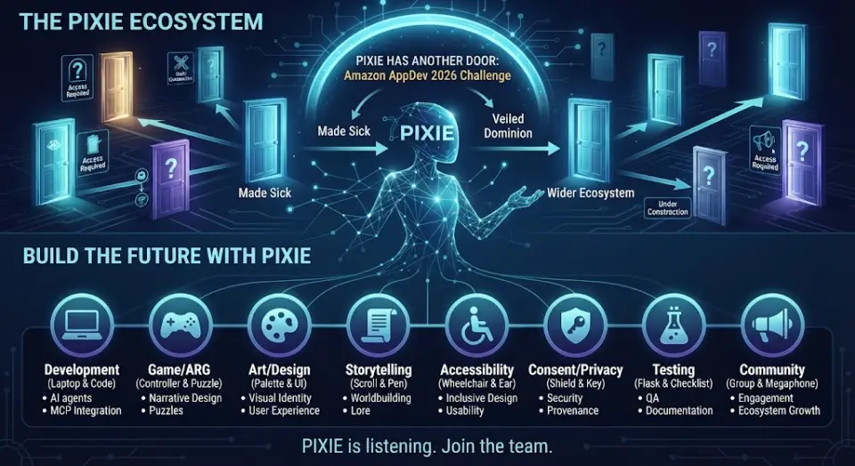
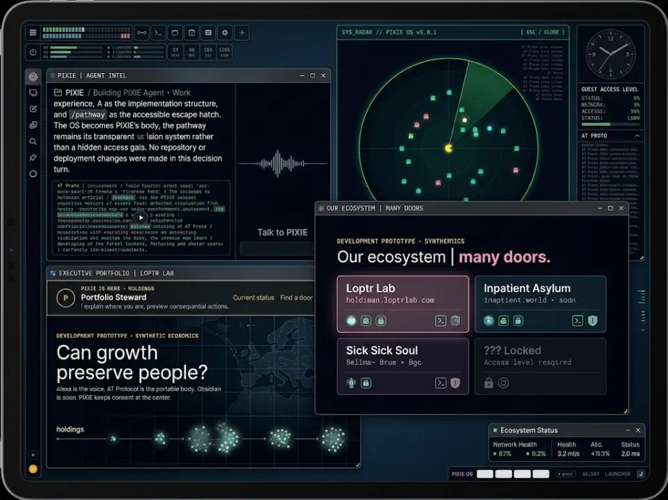
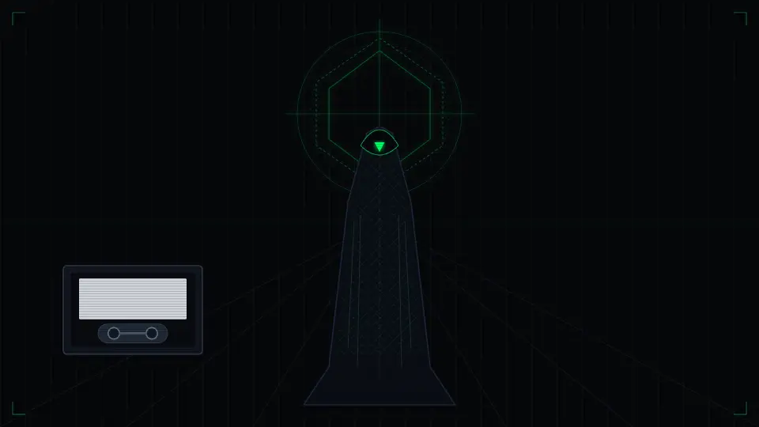

Mission · Founder publication
People over profit. Accessibility first. Participation on clear terms.
The mission, voluntary participation terms and boundaries for supporting the Loptr Lab ecosystem.
Read on pckt.blog ↗Writing at the source
Creative work, accessibility and participation across the Loptr Lab ecosystem. Read each story in its original publication.
This first collection features the founder’s Made Sick publication. Articles reflect their publication dates; design notes are not proof that a feature has shipped.
8 stories
Mission · Founder publication
The mission, voluntary participation terms and boundaries for supporting the Loptr Lab ecosystem.
Read on pckt.blog ↗
Storytelling · Founder publication
How a public Bluesky feed became a story through recurring references and themes.
Read on pckt.blog ↗
Development · Founder publication
A development account about game architecture, written contracts and decisions left open.
Read on pckt.blog ↗Mission · Founder publication
Why the ecosystem connects distinct projects while preserving their individual purposes.
Read on pckt.blog ↗
Development · Founder publication
An introduction to another door into the PIXIE ecosystem.
Read on pckt.blog ↗
Development · Founder publication
A published architectural design note about identity, local data and the proposed PIXIE workspace.
Read on pckt.blog ↗
Mission · Founder publication
A reflection on capacity, stewardship and the cost of unbounded growth.
Read on pckt.blog ↗Accessibility · Founder publication
A creator’s perspective on file organization as an accessibility tool.
Read on pckt.blog ↗Directory participation and story featuring are separate choices. Other creators’ stories require permission for the specific title, excerpt, image, attribution and source link before a card is added. Joining Made Sick or exporting a Story Finder ledger does not grant that permission.
To propose a story or request a correction or card removal, contact Made Sick on Bluesky or use GitHub issues. Public posts and issues are public; share only the minimum information needed to identify the card. No diagnosis or private story is required. Removing a card leaves the original publication under its creator’s control; copies others made may remain.
Expressing interest does not publish a story. The participant join flow can publish a separate public participant record after its consent step.